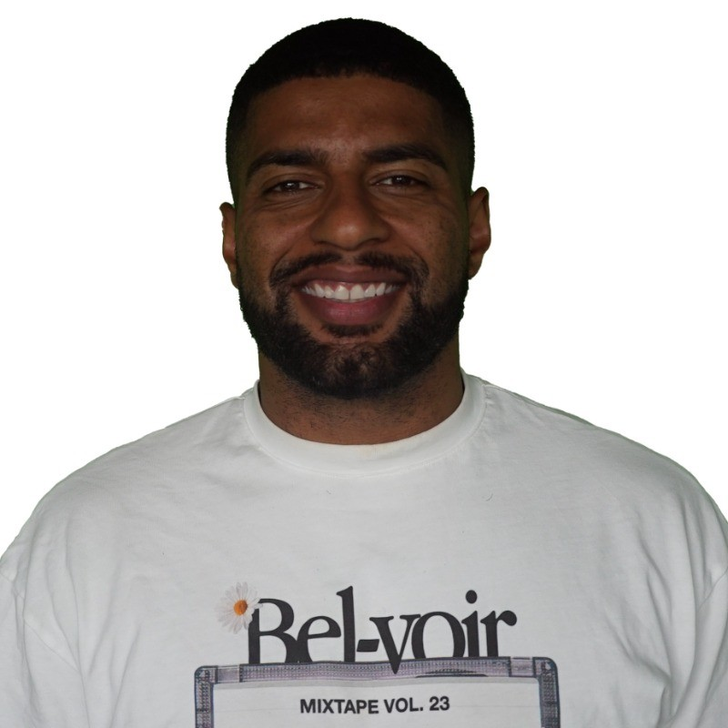

Jemal Wiseman CV

Summary
Highly motivated Software Engineer with over three years of professional experience in C++ development, specializing in creating and maintaining robust software systems. I have a proven track record of integrating complex datasets and optimizing performance, particularly in the gaming industry.
Passionate about leveraging data to drive insights and improvements, I have led initiatives such as statistical analysis and visualization tools. I thrive in collaborative environments, working closely with engineers, data scientists, and product managers to deliver high-quality solutions.
With a commitment to constant improvement and a disciplined approach to problem-solving, I aim to contribute to innovative projects that challenge my technical skills and creativity.
Work Experience
Software Engineer – Gameplay Team
- Played a key role in migrating a legacy game UI system to Unity, ensuring seamless integration with the new engine.
- Refactored and optimized existing code to align with Unity’s architecture and performance standards.
- Gained expertise in cross-platform game development and enhanced proficiency in C++ and Unity
Software Engineer - Match Team
- Owned and managed the statistical data pipeline, developing features like the Data Hub, which aggregates match analytics into visualizations such as pass maps and shot maps.
- Designed and implemented features with a focus on performance and scalability, including the Set Pieces AI system.
- Regularly collaborated with multi-disciplinary teams, including developers, QA analysts, and designers, to deliver high-quality updates and features.
- Actively engaged in performance improvements, bug fixes, and code reviews.
Skills
- Programming Languages: C++ (professional expertise), C# (Unity experience).
- Tools: Git (source control), Visual Studio (C++ and Unity development).
- Data Systems: Experience with data visualization and aggregation pipelines